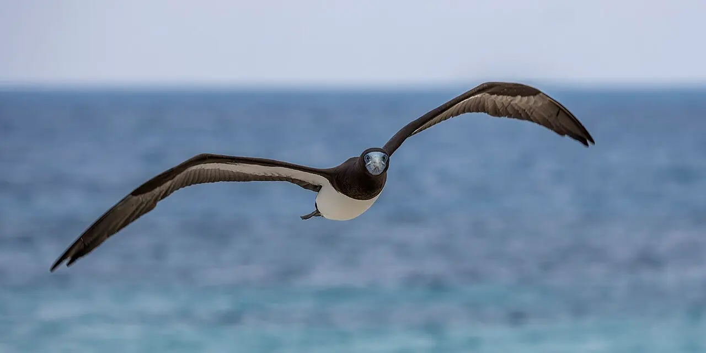

Módulo 3 Aula 13
Maneiras de voar
Voar não é uma coisa só. Uma mesma ave alterna entre bater asas, planar e subir no ar quente, e algumas fazem coisas que nenhum avião faz.
- Cinco maneiras de voar e quando cada uma aparece
- Como o urubu sobe sem bater as asas
- O que o beija-flor faz para ficar parado no ar

Ave da aula
Urubu-de-cabeça-vermelha Cathartes aura
Cinco maneiras de voar
Escolha uma maneira e veja o percurso de uma ave, desenhado de forma esquemática.

Bater asas
É a forma que dá o empuxo e a sustentação ao mesmo tempo. Gasta bastante energia, por isso muitas aves grandes só a usam para sair do chão ou para ir de um poleiro a outro, e depois planam[1].

Planar
Com as asas abertas e paradas, a ave desce devagar, trocando altura por distância. É o que faz depois de subir em uma corrente de ar quente. Aumentar o ângulo de descida aumenta a velocidade[1].
Subir no ar quente
O sol esquenta o chão, e o ar quente sobe em colunas. Urubus e outras aves grandes entram nessas correntes e giram em círculos para subir sem gastar energia[2]. Veja o bloco seguinte.


O elevador de ar quente
Uma é uma coluna de ar quente que sobe. Quem entra nela é levado para cima. Aves grandes, que gastariam muita energia batendo as asas, giram dentro da coluna para se manter no elevador[2]. Perto do chão, as térmicas são pequenas e fracas, e os urubus inclinam mais o corpo nas curvas; conforme sobem e a coluna se alarga, inclinam menos[3]. No fim da subida, a ave sai planando para procurar a próxima[2].
As quatro forças, de novo. Em todas essas maneiras de voar, as forças da aula 11 continuam valendo[9]. O que muda é de onde vem a energia: dos músculos, da gravidade (planando) ou do ar que sobe (térmicas).
Palavras novas
Teste rápido
Sem nota. Se errar, tente de novo.
Como o urubu sobe sem bater as asas?
O que o beija-flor faz para pairar?
Qual ave faz um mergulho de caça a velocidades altíssimas?
Referências e leitura complementar
Onde conferir o que foi dito nesta aula. Os números entre colchetes no texto levam a estas fontes. Os links abrem em outra aba.
- Falconiform – Flapping, Soaring, DivingEncyclopaedia Britannica · inglêsComo aves de rapina batem asas, planam e mergulham.
- A Closer Look at How Vultures Lazily Circle in the AirAudubon · inglêsComo os urubus giram em correntes de ar quente.
- Vultures respond to challenges of near-ground thermal soaring by varying bank anglePubMed (artigo científico) · inglês · leitura complementarEstudo sobre o ângulo de inclinação dos urubus ao subir em térmicas.
- HummingbirdsSmithsonian's National Zoo and Conservation Biology Institute · inglêsMetabolismo, batimentos do coração e torpor dos beija-flores.
- Three-dimensional flow and lift characteristics of a hovering ruby-throated hummingbirdPubMed Central (artigo científico) · inglêsA sustentação do beija-flor no ar parado.
- Aerodynamics of the hovering hummingbirdNature · inglês · leitura complementarEstudo clássico do voo pairado do beija-flor.
- Peregrine Falcon OverviewAll About Birds · Cornell Lab of Ornithology · inglêsO falcão-peregrino e seu mergulho de caça.
- Peregrine falconEncyclopaedia Britannica · inglêsVelocidade e biologia do falcão-peregrino.
- Four Forces on an AirplaneNASA Glenn Research Center · inglêsPeso, sustentação, empuxo e arrasto, com desenhos.
Os endereços foram abertos e conferidos em 29/09/2026. Alguns sites de revistas científicas e de órgãos oficiais exigem verificação humana e não puderam ser testados por robô. Sites externos podem mudar ou sair do ar.
Para levar
Em três frases
- As aves alternam bater as asas, planar, subir em correntes de ar quente, pairar e mergulhar.
- Ao subir em uma corrente de ar quente, o urubu gira em círculos e ganha altura sem bater as asas.
- O beija-flor paira com a asa produzindo sustentação na descida e, com menos força, na subida.